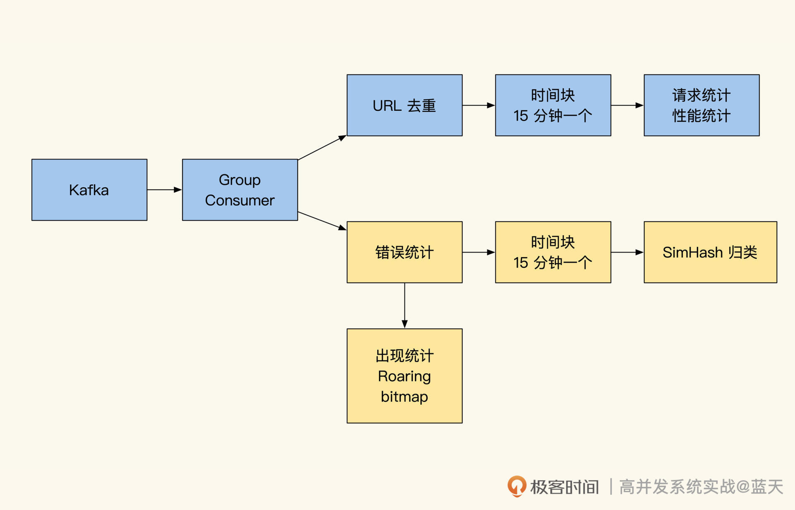
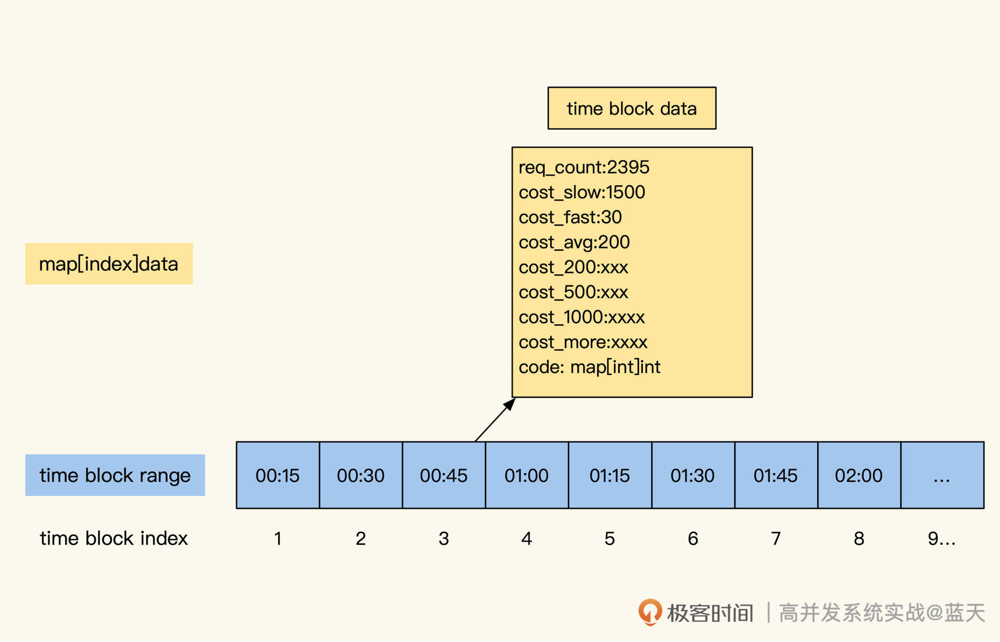
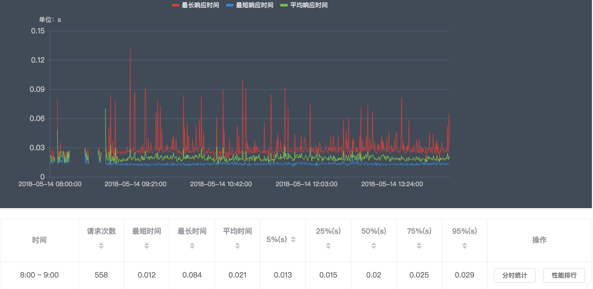

- 00 开篇词 高并发系统，技术实力的试金石.md.html
- 01 结构梳理：大并发下，你的数据库表可能成为性能隐患.md.html
- 02 缓存一致：读多写少时，如何解决数据更新缓存不同步？.md.html
- 03 Token：如何降低用户身份鉴权的流量压力？.md.html
- 04 同城双活：如何实现机房之间的数据同步？.md.html
- 05 共识Raft：如何保证多机房数据的一致性？.md.html
- 06 领域拆分：如何合理地拆分系统？.md.html
- 07 强一致锁：如何解决高并发下的库存争抢问题？.md.html
- 08 系统隔离：如何应对高并发流量冲击？.md.html
- 09 分布式事务：多服务的2PC、TCC都是怎么实现的？.md.html
- 10 稀疏索引：为什么高并发写不推荐关系数据库？.md.html
- 11 链路追踪：如何定制一个分布式链路跟踪系统 ？.md.html
- 12 引擎分片：Elasticsearch如何实现大数据检索？.md.html
- 13 实时统计：链路跟踪实时计算中的实用算法.md.html
- 14 跳数索引：后起新秀ClickHouse.md.html
- 15 实践方案：如何用C++自实现链路跟踪？.md.html
- 16 本地缓存：用本地缓存做服务会遇到哪些坑？.md.html
- 17 业务脚本：为什么说可编程订阅式缓存服务更有用？.md.html
- 18 流量拆分：如何通过架构设计缓解流量压力？.md.html
- 19 流量调度：DNS、全站加速及机房负载均衡.md.html
- 20 数据引擎：统一缓存数据平台.md.html
- 21 业务缓存：元数据服务如何实现？.md.html
- 22 存储成本：如何推算日志中心的实现成本？.md.html
- 23 网关编程：如何通过用户网关和缓存降低研发成本？.md.html
- 24 性能压测：压测不完善，效果减一半.md.html
- 答疑课堂 思考题答案（一）.md.html
- 结束语 为者常成，行者常至.md.html
- 捐赠
13 实时统计：链路跟踪实时计算中的实用算法
你好，我是徐长龙。
前几节课我们了解了ELK架构，以及如何通过它快速实现一个定制的分布式链路跟踪系统。不过ELK是一个很庞大的体系，使用它的前提是我们至少要有性能很好的三台服务器。
如果我们的数据量很大，需要投入的服务器资源就更多，之前我们最大一次的规模，投入了大概2000台服务器做ELK。但如果我们的服务器资源很匮乏，这种情况下，要怎样实现性能分析统计和监控呢？
当时我只有两台4核8G服务器，所以我用了一些巧妙的算法，实现了本来需要大量服务器并行计算，才能实现的功能。这节课，我就给你分享一下这些算法。
我先把实时计算的整体结构图放出来，方便你建立整体印象。

从上图可见，我们实时计算的数据是从Kafka拉取的，通过进程实时计算统计 Kafka的分组消费。接下来，我们具体看看这些算法的思路和功用。
URL去参数聚合
做链路跟踪的小伙伴都会很头疼URL去参数这个问题，主要原因是很多小伙伴会使用RESTful方式来设计内网接口。而做链路跟踪或针对API维度进行统计分析时，如果不做整理，直接将这些带参数的网址录入到统计分析系统中是不行的。
同一个API由于不同的参数无法归类，最终会导致网址不唯一，而成千上万个“不同”网址的API汇总在一起，就会造成统计系统因资源耗尽崩掉。除此之外，同一网址不同的method操作在RESTful中实际也是不同的实现，所以同一个网址并不代表同一个接口，这更是给归类统计增加了难度。
为了方便你理解，这里举几个RESTful实现的例子：
- GET geekbang.com/user/1002312/info 获取用户信息
- PUT geekbang.com/user/1002312/info 修改用户信息
- DELETE geekbang.com/user/1002312/friend/123455 删除用户好友
可以看到我们的网址中有参数，虽然是同样的网址，但是GET和PUT方法代表的意义并不一样，这个问题在使用Prometheus、Trace等工具时都会出现。
一般来说，碰到这种问题，我们都会先整理数据，再录入到统计分析系统当中。我们有两种常用方式来对URL去参数。
第一种方式是人工配置替换模板，也就是人工配置出一个URL规则，用来筛选出符合规则的日志并替换掉关键部分的参数。
我一般会用一个类似Trier Tree保存这个URL替换的配置列表，这样能够提高查找速度。但是这个方式也有缺点，需要人工维护。如果开发团队超过200人，列表需要时常更新，这样维护起来会很麻烦。
类Radix tree效果：
/user
- /*
- - /info
- - - :GET
- - - :PUT
- - /friend
- - - /*
- - - - :DELETE
具体实现是将网址通过/进行分割，逐级在前缀搜索树查找。
我举个例子，比如我们请求GET /user/1002312/info，使用树进行检索时，可以先找到/user根节点。然后在/user子节点中继续查找，发现有元素/*（代表这里替换） 而且同级没有其他匹配，那么会被记录为这里可替换。然后需要继续查找/*下子节点/info。到这里，网址已经完全匹配。
在网址更深一层是具体请求method，我们找到 GET 操作，即可完成这个网址的配置匹配。然后，直接把/*部分的1002312替换成固定字符串即可，替换的效果如下所示：
GET /user/1002312/info 替换成 /user/replaced/info
另一种方式是数据特征筛选，这种方式虽然会有误差，但是实现简单，无需人工维护。这个方法是我推崇的方式，虽然这种方式有可能有失误，但是确实比第一种方式更方便。
具体请看后面的演示代码：
//根据数据特征过滤网址内参数
function filterUrl($url)
{
$urlArr = explode("/", $url);
foreach ($urlArr as $urlIndex => $urlItem) {
$totalChar = 0; //有多少字母
$totalNum = 0; //有多少数值
$totalLen = strlen($urlItem); //总长度
for ($index = 0; $index < $totalLen; $index++) {
if (is_numeric($urlItem[$index])) {
$totalNum++;
} else {
$totalChar++;
}
}
//过滤md5 长度32或64 内容有数字 有字符混合 直接认为是md5
if (($totalLen == 32 || $totalLen == 64) && $totalChar > 0 && $totalNum > 0) {
$urlArr[$urlIndex] = "*md*";
continue;
}
//字符串 data 参数是数字和英文混合 长度超过3(回避v1/v2一类版本)
if ($totalLen > 3 && $totalChar > 0 && $totalNum > 0) {
$urlArr[$urlIndex] = "*data*";
continue;
}
//全是数字在网址中认为是id一类， 直接进行替换
if ($totalChar == 0 && $totalNum > 0) {
$urlArr[$urlIndex] = "*num*";
continue;
}
}
return implode("/", $urlArr);
}
通过这两种方式，可以很方便地将我们的网址替换成后面这样：
- GET geekbang.com/user/1002312/info => geekbang.com/user/*num*/info_GET
- PUT geekbang.com/user/1002312/info => geekbang.com/user/*num*/info_PUT
- DELETE geekbang.com/user/1002312/friend/123455 => geekbang.com/user/*num*/friend/*num*_DEL
经过过滤，我们的API列表是不是清爽了很多？这时再做API进行聚合统计分析的时候，就会更加方便了。
时间分块统计
将URL去参数后，我们就可以对不同的接口做性能统计了，这里我用的是时间块方式实现。这么设计，是因为我的日志消费服务可用内存是有限的（只有8G），而且如果保存太多数据到数据库的话，实时更新效率会很低。
考虑再三，我选择分时间块来保存周期时间块内的统计，将一段时间内的请求数据在内存中汇总统计。
为了更好地展示，我将每天24小时，按15分钟一个时间块来划分，而每个时间块内都会统计各自时间段内的接口数据，形成数据统计块。
这样，一天就会有96个数据统计块（计算公式是：86400秒/ (15分钟 * 60秒) = 96）。如果API有200个，那么我们内存中保存的一天的数据量就是19200条（96X200 = 19200）。

假设我们监控的系统有200个接口，就能推算出一年的统计数据量为700w条左右。如果有需要，我们可以让这个粒度更小一些。
事实上，市面上很多metrics监控的时间块粒度是3～5秒一个，直到最近几年出现OLAP和时序数据库后，才出现秒级粒度性能统计。而粒度越小监控越细致，粒度过大只能看到时段内的平均性能表现。
我还想说一个题外话，近两年出现了influxDB或Prometheus，用它们来保存数据也可以，但这些方式都需要硬件投入和运维成本，你可以结合自身业务情况来权衡。
我们看一下，在15分钟为一段的时间块里，统计了URL的哪些内容？

如上图，每个数据统计块内聚合了以下指标：
- 累计请求次数
- 最慢耗时
- 最快耗时
- 平均耗时
- 耗时个数，图中使用的是ELK提供的四分位数分析（如果拿不到全量数据来计算四分位数，也可以设置为：小于200ms、小于500ms、小于1000ms、大于1秒的请求个数统计）
- 接口响应http code及对应的响应个数（如：{“200”:1343,“500”:23,“404”: 12, “301”:14}）
把这些指标展示出来，主要是为了分析这个接口的性能表现。看到这里，你是不是有疑问，监控方面我们大费周章去统计这些细节，真的有意义么？
的确，大多数情况下我们API的表现都很好，个别的特殊情况才会导致接口响应很慢。不过监控系统除了对大范围故障问题的监控，细微故障的潜在问题也不能忽视。尤其是大吞吐量的服务器，更难发现这种细微的故障。
我们只有在监控上支持对细微问题的排查，才能提前发现这些小概率的故障。这些小概率的故障在极端情况下会导致集群的崩溃。因此提前发现、提前处理，才能保证我们线上系统面对大流量并发时不至于突然崩掉。
错误日志聚类
监控统计请求之后，我们还要关注错误的日志。说到故障排查的难题，还得说说错误日志聚类这个方式。
我们都知道，平时常见的线上故障，往往伴随着大量的错误日志。在海量警告面前，我们一方面要获取最新的错误消息，同时还不能遗漏个别重要但低频率出现的故障。
因为资源有限，内存里无法存放太多的错误日志，所以日志聚类的方案是个不错的选择，通过日志聚合，对错误进行分类，给用户排查即可。这样做，在发现错误的同时，还能够提供错误的范本来加快排查速度。
我是这样实现日志错误聚合功能的：直接对日志做近似度对比计算，并加上一些辅助字段作为修正。这个功能可以把个别参数不同、但同属一类错误的日志聚合到一起，方便我们快速发现的低频故障。
通过这种方式实现的错误监控还有额外的好处，有了它，无需全站统一日志格式标准，就能轻松适应各种格式的日志，这大大方便了我们对不同系统的监控。
说到这，你是不是挺好奇实现细节的？下面是github.com/mfonda/simhash 提供的simhash文本近似度样例：
package main
import (
"fmt"
"github.com/mfonda/simhash"
)
func main() {
var docs = [][]byte{
[]byte("this is a test phrass"), //测试字符串1
[]byte("this is a test phrass"), //测试字符串2
[]byte("foo bar"), //测试字符串3
}
hashes := make([]uint64, len(docs))
for i, d := range docs {
hashes[i] = simhash.Simhash(simhash.NewWordFeatureSet(d)) //计算出测试字符串对应的hash值
fmt.Printf("Simhash of %s: %x\n", d, hashes[i])
}
//测试字符串1 对比 测试字符串2
fmt.Printf("Comparison of 0 1 : %d\n", simhash.Compare(hashes[0], hashes[1]))
//测试字符串1 对比 测试字符串3
fmt.Printf("Comparison of 0 2 : %d\n", simhash.Compare(hashes[0], hashes[2]))
}
看完代码，我再给你讲讲这里的思路。
我们可以用一个常驻进程，持续做 group consumer 消费Kafka日志信息，消费时每当碰到错误日志，就需要通过simhash将其转换成64位hash。然后，通过和已有错误类型的列表进行遍历对比，日志长度相近且海明距离（simhash.compare计算结果）差异不超过12个bit差异，就可以归为一类。
请注意，由于算法的限制，simhash对于小于100字的文本误差较大，所以需要我们实际测试下具体的运行情况，对其进行微调。文本特别短时，我们需要一些其他辅助来去重。注意，同时100字以下要求匹配度大于80%，100字以上则要大于90%匹配度。
最后，除了日志相似度检测以外，也可以通过生成日志的代码文件名、行数以及文本长度来辅助判断。由于是模糊匹配，这样能够减少失误。
接下来，我们要把归好类的错误展示出来。
具体步骤是这样的：如果匹配到当前日志属于已有某个错误类型时，就保存错误第一次出现的日志内容，以及错误最后三次出现的日志内容。
我们需要在归类界面查看错误的最近发生时间、次数、开始时间、开始错误日志，同时可以通过Trace ID直接跳转到Trace过程渲染页面。（这个做法对排查问题很有帮助，你可以看看我在Java单机开源版中的实现，体验下效果。）
事实上，错误去重还有很多的优化空间。比方说我们内存中已经统计出上千种错误类型，那么每次新进的错误日志的hash，就需要和这1000个类型挨个做对比，这无形浪费了我们大量的CPU资源。
对于这种情况，网上有一些简单的小技巧，比如将64位hash分成两段，先对比前半部分，如果近似度高的话再对比后半部分。
这类技巧叫日志聚合，但行业里应用得比较少。
云厂商也提供了类似功能，但是很少应用于错误去重这个领域，相信这里还有潜力可以挖掘，算力充足的情况下行业常用K-MEANS或DBSCAN算法做日志聚合，有兴趣的小伙伴可以再深挖下。
bitmap 实现频率统计
我们虽然统计出了错误归类，但是这个错误到底发生了多久、线上是否还在持续产生报错？这些问题还是没解决。
若是在平时，我们会将这些日志一个个记录在OLAP类的统计分析系统中，按时间分区来汇总聚合这些统计。但是，这个方式需要大量的算力支撑，我们没有那么多资源，还有别的方式来表示么？
这里我用了一个小技巧，就是在错误第一次产生后，每一秒用一个bit代表在bitmap中记录。
如果这个分钟内产生了同类错误，那么就记录为1，以此类推，一天会用86400个bit =1350个uint64来记录日志出现的频率周期。这样排查问题时，就可以根据bit反推什么时间段内有错误产生，这样用少量的内存就能快速实现频率周期的记录。
不过这样做又带来了一个新的问题——内存浪费严重。这是由于错误统计是按错误归类类型放在内存中的。一个新业务平均每天会有上千种错误，这导致我需要1350x1000个int64保存在内存中。
为了节省内存的使用，我将bitmap实现更换成 Roraing bitmap。它可以压缩bitmap的空间，对于连续相似的数据压缩效果更明显。事实上bitmap的应用不止这些，我们可以用它做很多有趣的标注，相对于传统结构可以节省更多的内存和存储空间。
总结
这节课我给你分享了四种实用的算法，这些都是我实践验证过的。你可以结合后面这张图来复习记忆。

为了解决参数不同给网址聚类造成的难题，可以通过配置或数据特征过滤方式对URL进行整理，还可以通过时间块减少统计的结果数据量。
为了梳理大量的错误日志，simhash算法是一个不错的选择，还可以搭配bitmap记录错误日志的出现频率。有了这些算法的帮助，用少量系统资源，即可实现线上服务的故障监控聚合分析功能，将服务的工作状态直观地展示出来。
学完这节课，你有没有觉得，在资源匮乏的情况下，用一些简单的算法，实现之前需要几十台服务器的分布式服务才能实现的服务，是十分有趣的呢？
即使是现代，互联网发展这几年，仍旧有很多场景需要一些特殊的设计来帮助我们降低资源的损耗，比如：用Bloom Filter减少扫描次数、通过Redis的hyperLogLog对大量数据做大致计数、利用GEO hash实现地图分块分区统计等。如果你有兴趣，课后可以拓展学习一下Redis 模块的内容。
思考题
基于这节课讲到的算法和思路，SQL如何做聚合归类去重？
欢迎你在留言区和我交流讨论，我们下节课见！
© 2019 - 2023 Liangliang Lee. Powered by gin and hexo-theme-book.